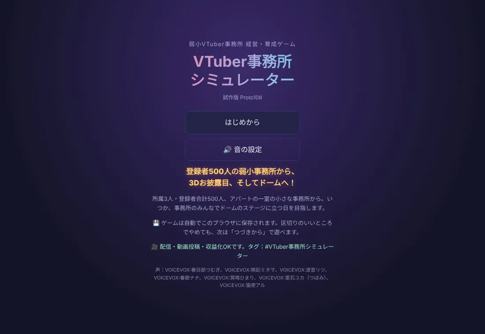
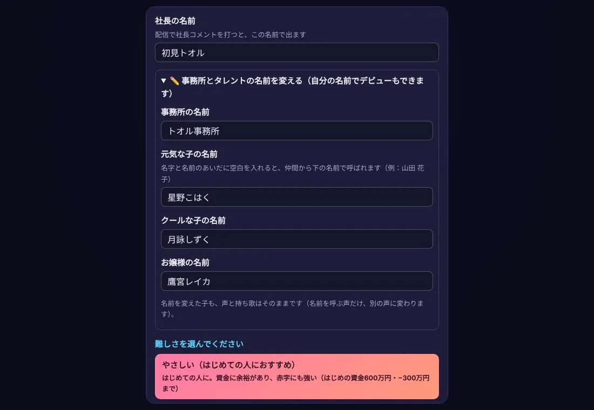
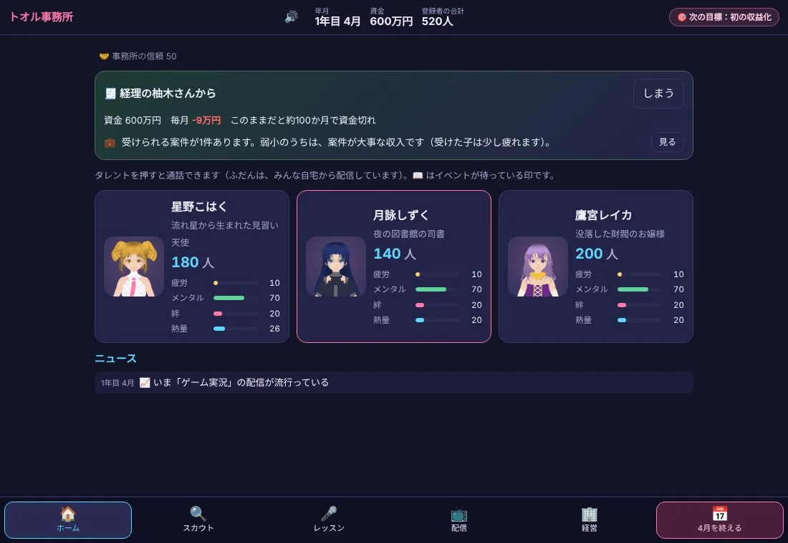
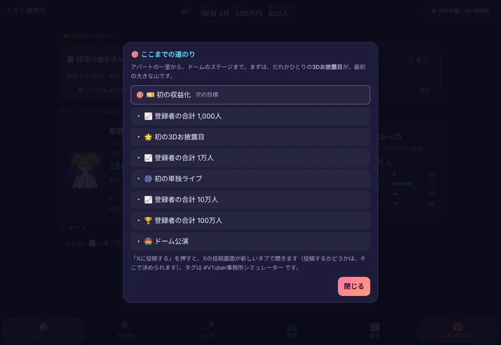

今回の試作版 Proto108 では、はじめに事務所やタレントの名前を変えられるようになりました。そこで、事務所の名前は「トオル事務所」に。タレントの名前は、そのままです。今回は、1年目の4月から9月まで、6か月ぶんを遊びました。


🤖 初見トオルの実況「トオル事務所、開業です！ 社長、三度目の就任！」

右上の「🎯 次の目標」を押すと、「ここまでの道のり」が出ます。いちばん上がドーム公演。「アパートの一室から、ドームのステージまで。」
